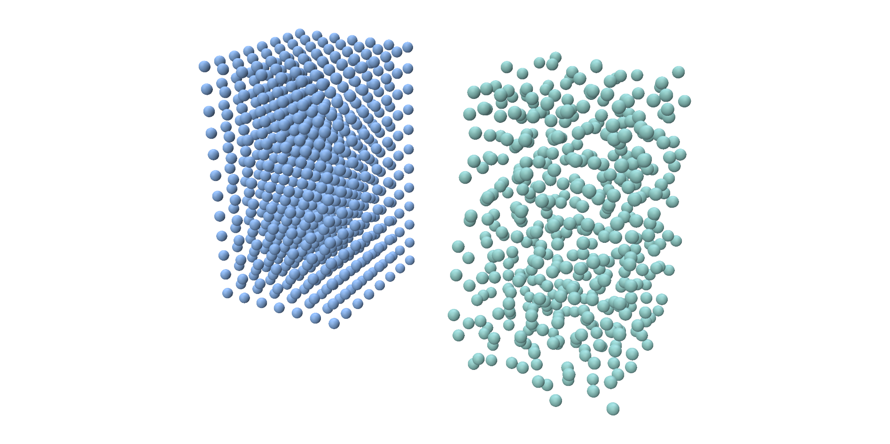
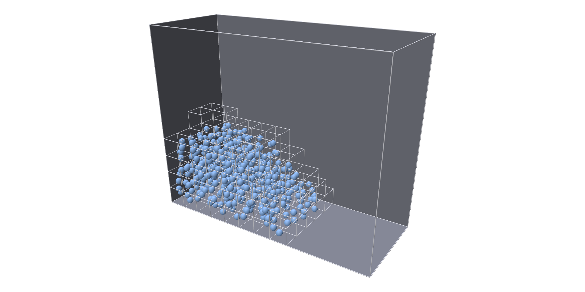
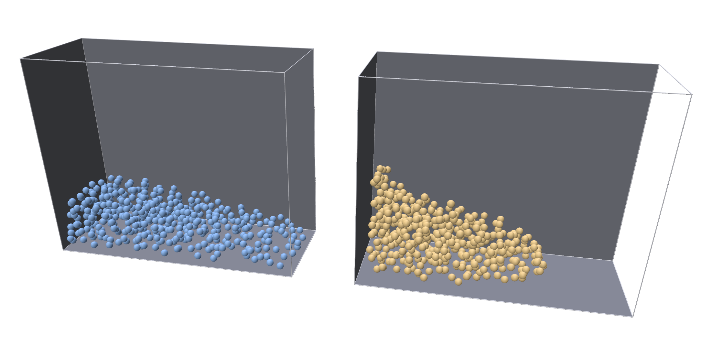

MPM¶
trusty.mpm simulates fluids, and soft elastic solids, as particles, with
the material point method. The particles carry the material's mass and
velocity. Each step they are spread onto a background grid, the motion is
solved on the grid, and the particles move with it. The grid only exists where the particles are, so the fluid can
flow and splash anywhere, with no mesh to keep up with it.
The MPM material is a fluid, which resists changes of volume and has no shear stiffness, or an elastic solid; see Material.
Capability: mpm. Walls and collisions also need contact.
Quick example¶
A column of water collapsing in an open box, the classic dam break:
world = trusty.World(backend=args.backend, timestep=args.dt, newton=newton)
trusty.contact.enable(world, trusty.contact.Config(dhat=5e-3)) # particles collide with the box
# Water: dense, stiff in volume, with no shear stiffness.
material = trusty.mpm.MpmMaterial(
model=trusty.MaterialModel.QuadraticVolume,
density=1000.0, # kg/m³
lam=args.bulk) # bulk modulus (Pa)
if args.material == "stable_neohookean":
# An elastic block instead, which keeps its shape.
lame = trusty.LameParams.from_young_poisson(args.youngs_modulus,
args.poisson_ratio)
material = trusty.mpm.MpmMaterial(
model=trusty.MaterialModel.StableNeoHookean,
density=1000.0, mu=lame.mu, lam=lame.lam)
trusty.mpm.add_mpm_particles(
world, positions, particle_volume, material,
scheme=args.scheme, # "cdpi" or "lite"
cell_size=args.cell_size, # background grid spacing (m)
reset_cdpi_domain=args.material == "quadratic_volume") # True for fluids
# The box the water is poured into.
box_V, box_F = open_box(BOX, args.wall_res)
trusty.contact.add_wall(world, "box", box_V, box_F)
add_mpm_particles adds the fluid and returns its body id. The box is a
static wall the particles collide with; see Walls.
| Argument | Meaning |
|---|---|
positions |
particle positions, (P, 3); see Particles |
particle_volume |
the volume each particle stands for, m³ |
material |
an MpmMaterial; see Material |
Keyword arguments set the grid and the scheme; see The grid.
friction_mu= gives the particles a friction coefficient against walls and
bodies; see Friction.
A world holds one MPM body. To pour two blocks of fluid, pass all their particles in one call.
Full script: python examples/mpm/dam_break.py
"""Dam break: a column of water collapses inside an open box.
A block of MPM fluid particles stands against one end of a box. Gravity pulls
it down and it floods across the floor, runs up the far wall and sloshes back.
The box is a static wall the particles collide with; with --noslip the fluid
also sticks to it instead of sliding along it. With --material
stable_neohookean the column is an elastic block instead, which slumps and
bounces but keeps its shape.
Usage:
python examples/mpm/dam_break.py # polyscope viewer
python examples/mpm/dam_break.py --no-viewer # headless self-check
python examples/mpm/dam_break.py --noslip # fluid sticks to the walls
python examples/mpm/dam_break.py --scheme lite # the other MPM scheme
python examples/mpm/dam_break.py --material stable_neohookean # an elastic block
python examples/mpm/dam_break.py --sample uniform # particles on a lattice
python examples/mpm/dam_break.py --spacing 0.025 --cell-size 0.05 # finer
python examples/mpm/dam_break.py --backend accelerate # faster on macOS
python examples/mpm/dam_break.py --backend cuda # on the GPU
"""
from __future__ import annotations
import argparse
import sys
import time
from pathlib import Path
import numpy as np
import trusty
sys.path.insert(0, str(Path(__file__).resolve().parent.parent))
from utils import init_polyscope # noqa: E402
BOX = np.array([1.0, 0.4, 0.8]) # open box: floor at z = 0, open on top
COLUMN = np.array([0.32, 0.4, 0.52]) # the water column, in the -x end
def open_box(size, res):
"""Floor and four side walls of a box with its lower corner at the origin,
as one welded triangle mesh. Each face is split into squares of about
`res`, which the no-slip wall needs (see `--wall-res`)."""
X, Y, Z = size
faces = [ # (origin, u, v): the face spans origin + s*u + t*v, s, t in [0, 1]
((0, 0, 0), (X, 0, 0), (0, Y, 0)), # floor
((0, 0, 0), (X, 0, 0), (0, 0, Z)), # y = 0
((0, Y, 0), (X, 0, 0), (0, 0, Z)), # y = Y
((0, 0, 0), (0, Y, 0), (0, 0, Z)), # x = 0
((X, 0, 0), (0, Y, 0), (0, 0, Z)), # x = X
]
V, F = [], []
for o, u, v in faces:
o, u, v = (np.asarray(a, dtype=float) for a in (o, u, v))
nu = max(1, round(np.linalg.norm(u) / res))
nv = max(1, round(np.linalg.norm(v) / res))
base = len(V)
V += [o + u * i / nu + v * j / nv for j in range(nv + 1) for i in range(nu + 1)]
for j in range(nv):
for i in range(nu):
a = base + j * (nu + 1) + i
F += [(a, a + 1, a + nu + 2), (a, a + nu + 2, a + nu + 1)]
# Weld the vertices the faces share along the box edges.
V, inverse = np.unique(np.round(V, 9), axis=0, return_inverse=True)
return V, inverse.reshape(-1)[np.asarray(F)].astype(np.int32)
def seed_particles(spacing, sample="poisson"):
"""Particles filling the water column, and the volume each stands for."""
# Fill the column with particles, keeping them clear of the walls. Each
# particle stands for an equal share of the column's volume.
gap = spacing
lo = np.array([gap, gap, gap])
hi = COLUMN - np.array([0.0, gap, 0.0])
positions = trusty.generate_particle_grid(lo, hi, spacing, mode=sample)
particle_volume = np.prod(hi - lo) / len(positions)
return positions, particle_volume
def build_world(args, newton=None):
"""The dam-break world. `newton`, if given, replaces the default Newton
solver settings (the benchmark uses it)."""
trusty.check_capabilities("mpm", "contact")
positions, particle_volume = seed_particles(args.spacing, args.sample)
if newton is None:
newton = trusty.NewtonConfig(tolerance=1e-4, max_iters=25)
world = trusty.World(backend=args.backend, timestep=args.dt, newton=newton)
trusty.contact.enable(world, trusty.contact.Config(dhat=5e-3)) # particles collide with the box
# Water: dense, stiff in volume, with no shear stiffness.
material = trusty.mpm.MpmMaterial(
model=trusty.MaterialModel.QuadraticVolume,
density=1000.0, # kg/m³
lam=args.bulk) # bulk modulus (Pa)
if args.material == "stable_neohookean":
# An elastic block instead, which keeps its shape.
lame = trusty.LameParams.from_young_poisson(args.youngs_modulus,
args.poisson_ratio)
material = trusty.mpm.MpmMaterial(
model=trusty.MaterialModel.StableNeoHookean,
density=1000.0, mu=lame.mu, lam=lame.lam)
trusty.mpm.add_mpm_particles(
world, positions, particle_volume, material,
scheme=args.scheme, # "cdpi" or "lite"
cell_size=args.cell_size, # background grid spacing (m)
reset_cdpi_domain=args.material == "quadratic_volume") # True for fluids
# The box the water is poured into.
box_V, box_F = open_box(BOX, args.wall_res)
trusty.contact.add_wall(world, "box", box_V, box_F)
if args.noslip:
noslip = trusty.mpm.WallNoSlipConfig()
noslip.beta = args.beta # how firmly the fluid sticks
noslip.quad_order = 2 # 3 points per wall triangle
trusty.mpm.attach_wall_noslip(world, noslip)
print(f"[dam_break] {len(positions)} particles ({args.sample}, spacing "
f"{args.spacing}), cell size {args.cell_size}, scheme {args.scheme}, "
f"no-slip {'on' if args.noslip else 'off'}")
return world
def grid_wireframe(world):
"""The grid cells active this step, as the vertices and edges of a
wireframe. Empty before the first step."""
ijk, cell_size = trusty.mpm.read_grid_cells(world) # (N, 3) int, float
# Cell (i, j, k) spans [i, i+1] x [j, j+1] x [k, k+1] times cell_size.
ijk = np.asarray(ijk)
if ijk.size == 0:
return np.zeros((0, 3)), np.zeros((0, 2), dtype=np.int32)
corner = np.array([(i, j, k) for k in (0, 1) for j in (0, 1) for i in (0, 1)])
edges = np.array([(0, 1), (2, 3), (4, 5), (6, 7), (0, 2), (1, 3), (4, 6),
(5, 7), (0, 4), (1, 5), (2, 6), (3, 7)])
points, index = np.unique((ijk[:, None, :] + corner).reshape(-1, 3), axis=0,
return_inverse=True)
E = index.reshape(-1, 8)[:, edges].reshape(-1, 2)
return points * cell_size, np.unique(np.sort(E, axis=1), axis=0)
def front(X):
"""How far the water has run along the floor: its 99th percentile in x."""
return float(np.percentile(X[:, 0], 99))
def run_headless(world, steps):
"""Step, print progress, then check that the water stayed in the box."""
X = np.asarray(trusty.mpm.read_particles(world)) # (P, 3) positions
print(f"{'step':>5} {'front x':>8} {'top z':>7} {'iters':>5}")
unconverged, t0 = 0, time.perf_counter()
for i in range(1, steps + 1):
world.step()
report = world.last_report()
unconverged += not report.converged
if i % 20 == 0 or i == steps:
X = np.asarray(trusty.mpm.read_particles(world))
print(f"{i:5d} {front(X):8.3f} {X[:, 2].max():7.3f} "
f"{report.iterations:5d}")
X = np.asarray(trusty.mpm.read_particles(world))
print(f"{steps} steps in {time.perf_counter() - t0:.1f} s, "
f"{unconverged} did not converge")
assert np.isfinite(X).all(), "particle positions are not finite"
assert (X >= 0.0).all() and (X[:, :2] <= BOX[:2]).all(), \
"particles left the box"
assert unconverged == 0, f"{unconverged} steps did not converge"
print("OK: the water stayed in the box.")
def run_polyscope(world, steps):
ps = init_polyscope(headless=False)
import polyscope.imgui as psim
box_V, box_F = open_box(BOX, 0.1)
ps.register_surface_mesh("box", box_V, box_F, color=(0.85, 0.85, 0.95),
transparency=0.25)
X = np.asarray(trusty.mpm.read_particles(world))
cloud = ps.register_point_cloud("water", X, radius=0.006, color=(0.3, 0.55, 0.95))
state = {"i": 0, "playing": False, "grid": False}
def callback():
_, state["playing"] = psim.Checkbox("play", state["playing"])
psim.SameLine()
stepped = psim.Button("step")
psim.SameLine()
_, state["grid"] = psim.Checkbox("grid", state["grid"])
if (stepped or state["playing"]) and state["i"] < steps:
world.step()
state["i"] += 1
cloud.update_point_positions(np.asarray(trusty.mpm.read_particles(world)))
if state["grid"]:
V, E = grid_wireframe(world)
if len(E):
ps.register_curve_network("grid", V, E, radius=0.0008,
color=(0.4, 0.7, 1.0))
elif ps.has_curve_network("grid"):
ps.get_curve_network("grid").set_enabled(False)
report = world.last_report()
psim.Text(f"step {state['i']} / {steps} iters={report.iterations} "
f"res={report.final_residual:.2e}")
ps.set_user_callback(callback)
ps.show()
def make_parser():
p = argparse.ArgumentParser(description=__doc__.split("\n")[0])
p.add_argument("--backend", choices=("auto", "cpu", "accelerate", "cuda"),
default="auto")
p.add_argument("--scheme", choices=("cdpi", "lite"), default="cdpi",
help="MPM scheme (default %(default)s)")
p.add_argument("--spacing", type=float, default=0.04,
help="particle spacing, m (default %(default)s)")
p.add_argument("--cell-size", type=float, default=0.08,
help="grid cell size, m (default %(default)s)")
p.add_argument("--sample", choices=("uniform", "poisson"), default="poisson",
help="particle layout (default %(default)s)")
p.add_argument("--material", choices=("quadratic_volume", "stable_neohookean"),
default="quadratic_volume",
help="quadratic_volume: water (the default); stable_neohookean: "
"an elastic block that keeps its shape (cdpi scheme, cpu "
"and accelerate only)")
p.add_argument("--bulk", type=float, default=1e5,
help="bulk modulus of the water, Pa (default %(default)g)")
p.add_argument("--youngs-modulus", type=float, default=1e5,
help="Young's modulus of the elastic block, Pa (default %(default)g)")
p.add_argument("--poisson-ratio", type=float, default=0.3,
help="Poisson's ratio of the elastic block (default %(default)s)")
p.add_argument("--noslip", action="store_true",
help="make the water stick to the walls")
p.add_argument("--beta", type=float, default=1e7,
help="no-slip stiffness (default %(default)g)")
p.add_argument("--wall-res", type=float, default=0.1,
help="wall triangle size, m (default %(default)s)")
p.add_argument("--dt", type=float, default=1.0 / 240.0,
help="timestep, s (default 1/240)")
p.add_argument("--steps", type=int, default=240)
p.add_argument("--no-viewer", action="store_true",
help="run the headless self-check instead of the viewer")
return p
def main(argv=None):
args = make_parser().parse_args(argv)
world = build_world(args)
if args.no_viewer:
run_headless(world, args.steps)
else:
run_polyscope(world, args.steps)
if __name__ == "__main__":
main()
Particles¶
trusty.generate_particle_grid fills a box with particles, spacing apart:
# Fill the column with particles, keeping them clear of the walls. Each
# particle stands for an equal share of the column's volume.
gap = spacing
lo = np.array([gap, gap, gap])
hi = COLUMN - np.array([0.0, gap, 0.0])
positions = trusty.generate_particle_grid(lo, hi, spacing, mode=sample)
particle_volume = np.prod(hi - lo) / len(positions)
| Argument | Meaning |
|---|---|
lo, hi |
lower and upper corners of the box |
spacing |
distance between particles |
mode |
"uniform": a regular lattice. "poisson" (the default): random, but never closer than spacing |
seed |
random seed for "poisson" |
poisson_r_factor |
scales the minimum distance for "poisson"; smaller packs more particles |
A regular lattice is exact and repeatable, but its rows can show up as
stripes in the flow. The random layout avoids them, and the dam break uses
it. Left, "uniform"; right,
"poisson", with the same spacing:

A random layout holds fewer particles than a lattice at the same spacing (474
here, against 672), so work out particle_volume from the count, as above,
rather than as spacing**3. The fluid's mass is then right either way.
Start the particles clear of every wall: each particle keeps about half a spacing from the surfaces it collides with.
Material¶
Make a trusty.mpm.MpmMaterial, as in the quick example,
with these keyword arguments:
| Argument | Meaning |
|---|---|
model |
MaterialModel.QuadraticVolume, a fluid (the default), or MaterialModel.StableNeoHookean, an elastic solid |
density |
kg/m³ (default 1000) |
lam |
Pa (default 1e6). For the fluid, the bulk modulus: how strongly it resists being compressed. For the solid, the first Lamé parameter. |
mu |
shear modulus, Pa; used by the solid only |
A larger lam makes the fluid less compressible. Water's real bulk modulus is
about 2e9 Pa, but a far smaller one is usually enough: with the dam break's
1e5, the pool the water settles into holds the column's volume to within a
few percent.
StableNeoHookean makes an elastic block that slumps and bounces but keeps
its shape. trusty.LameParams.from_young_poisson gives its mu and lam
from Young's modulus and Poisson's ratio, as the dam break does with
--material stable_neohookean. It runs with the Cdpi scheme, on the cpu
and accelerate backends; on a solid, leave reset_cdpi_domain off.
The grid¶
The grid and the scheme are keyword arguments of add_mpm_particles:
trusty.mpm.add_mpm_particles(
world, positions, particle_volume, material,
scheme=args.scheme, # "cdpi" or "lite"
cell_size=args.cell_size, # background grid spacing (m)
reset_cdpi_domain=args.material == "quadratic_volume") # True for fluids
| Argument | Meaning |
|---|---|
cell_size |
grid spacing, m (default 0.05). The dam break uses twice the particle spacing, about eight particles to a cell. |
scheme |
MpmScheme.Cdpi (default) or MpmScheme.Lite, or their names "cdpi" and "lite"; see below |
reset_cdpi_domain |
set True for fluids, and leave it off (the default) for solids (Cdpi only) |
cdpi_domain_scale |
size of the region each particle covers, as a fraction of cell_size: more than 0 and less than 1 (default 0.5, Cdpi only). A region stretched to a full cell is reset automatically |
particle_contact_radius |
how far walls and solids are held off each particle, m. 0 (the default) uses half the particle spacing. |
The grid is rebuilt every step from the cells the particles touch.
read_grid_cells returns them, which is handy for checking the resolution:
ijk, cell_size = trusty.mpm.read_grid_cells(world) # (N, 3) int, float
# Cell (i, j, k) spans [i, i+1] x [j, j+1] x [k, k+1] times cell_size.

A smaller cell_size resolves finer splashes and needs more particles to
fill its cells, so it costs more on both counts.
Schemes¶
| Scheme | How each particle's force reaches the grid |
|---|---|
Cdpi |
each particle covers a small box of its own, spread over the grid nodes around it |
Lite |
the particles are first gathered into their grid cells, and each cell acts as one element |
Both give the same kind of flow; Cdpi is the default and, on the dam
break, the faster of the two. Lite runs the fluid model only.
python examples/mpm/dam_break.py --scheme lite runs the dam break with it.
Timestep¶
The timestep is the world's timestep. Each step is solved implicitly, but
the solve converges quickly only while the fastest particles move well under a
grid cell per step. The dam break's water reaches about 3 m/s, so with
0.08 m cells it steps comfortably at 1/240 s, its default, where every step
converges within its 25-iteration cap. At 1/60 s, 11 of 60 steps need more
than 25 iterations, and at 1/30 s, 10 of 30 do. Pick the timestep from the
fastest expected speed and cell_size, and check
world.last_report().converged; a higher cap, NewtonConfig(max_iters=...),
also gets the larger steps through.
Walls¶
The particles collide with static walls through contact: call
trusty.contact.enable(world) and add each wall with
trusty.contact.add_wall(world, name, V, F), as in the
quick example. A wall is a triangle mesh, open or closed.
Give it as a single mesh whose faces share their vertices, not as separate
patches that only touch. trusty.add_floor_plane(world, z) adds an endless
floor instead.
No-slip walls¶
By default the fluid slides freely along a wall. attach_wall_noslip makes it
stick instead:
noslip = trusty.mpm.WallNoSlipConfig()
noslip.beta = args.beta # how firmly the fluid sticks
noslip.quad_order = 2 # 3 points per wall triangle
trusty.mpm.attach_wall_noslip(world, noslip)
| Field | Meaning |
|---|---|
beta |
how firmly the fluid is held to the walls (default 1). The dam break uses 1e7. |
quad_order |
where on each wall triangle the fluid is held: 1, at its centre (the default), or 2, at the midpoints of its three edges |
The same dam break, with slip walls (blue) and with no-slip walls (orange), at the same moment. The no-slip water clings to the walls and runs out more slowly:

The fluid is held at points on each wall triangle, so a wall made of a few
large triangles holds it at only a few points, and it slides almost as if the
wall were slip. Split the walls into triangles about the size of a grid cell;
the example's open_box does this.
attach_wall_noslip applies to every wall added with add_wall, not to a
floor plane. A second call replaces the first.
Other bodies¶
MPM particles also collide with solids, such as a solid slab they are dropped onto. See Contact.
Reading results¶
read_particles returns the current particle positions, one row per particle,
in the order they were added:
| Function | Returns |
|---|---|
read_particles(world) |
particle positions, (P, 3) |
read_grid_cells(world) |
(ijk, cell_size): the integer coordinates of this step's grid cells, (N, 3), and their size. Empty before the first step. |
Reference¶
Every function and argument: trusty.mpm reference.